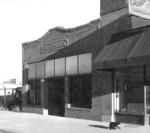

Address:
2920 Minnesota
|
Photolog:
17-10 |

Kirk's Grocery was a long-standing South side business since the late
19th century. Around 1900 the business operated out of wood frame building
down the block at 2910 Minnesota and around 1910 moved to this building.
Note the painted sign panel on the building's east side advertising Kirk's
Grocery in white on black. Kirk's Grocery was deemed eligible for the
National Register of Historic Places in 1982. |
Legal Description:
Billings Townsite Block: A Lots: 16 |
Owner:
Ronald & Judy Pinnick c/o B Pinnick
1918 11th Ave N, Billings MT 59101 |
|
Historic
Name:
Kirk's Grocery
Current Name:
Vacant
|
Architect:
Unknown |
Original Owner:
Richard Kirk
|
Builder:
Unknown
|
Date Of Construction:
1909-1912 |
Original
Use:
Store
Current Use:
Vacant
|
|
Physical
Description:
Kirk's Grocery Store is a single story, red brick building.
The massing is rectangular, and fronts onto Minnesota Avenue to
the north. It is a single bay store, with a central recessed entrance
on the primary (north) façade. The storefront has large glass
panels framed with wood, and is capped by a wide, banded transom
at the top.
The east side,
there are no openings. A painted sign panel advertising Kirk's Grocery
in white on black is located in the upper north corner. The west
side abuts the adjacent building. On the south, the rear of the
building opens onto an alley. A new garage has been added in recent
years behind the original brick rear wall.
|
|
Historical
Associations:
This property was initally sold by M&MLI to J.M. Bell in
December 1883. He in turn sold the property to Charles Burton in
1890. A residence was constructed by 1893; and in 1903, a stone
building housing a Chinese laundry was depicted on this site by
the Sanborn maps.
Richard Kirk
was the subsequent owner and proprietor of Kirk's Grocery, a long-standing
South side business since the late 19th century. By 1900, Hogue
& Kirk first operated in a wood frame building down the block
at 2910 Minnesota. 1903 city directories listed Kirk in partnership
with William A Robinson,; by 1907, Kirk sole proprietor. He built
and moved into this store ca. 1910, and shortly thereafter took
on Thomas Kirk as partner. Kirk Brothers, and from the mid-1920s
simply Kirk's Grocery, remained in this building through the 1930s.
In the 1940s through mid-50s, Thomas Kirk reformed the business
as Independent Wholesale Grocers, and moved into the space in the
adjacent buildings 2922-2924 Minnesota.
|
Integrity:
|
|
Historical
and Architectural Significance:
|
Research
Sources:
|
Form
Completed For Downtown Billings Historic Survey By:
|
Other:
|